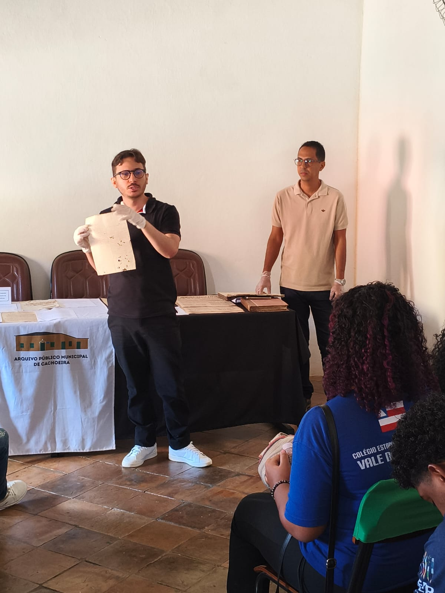
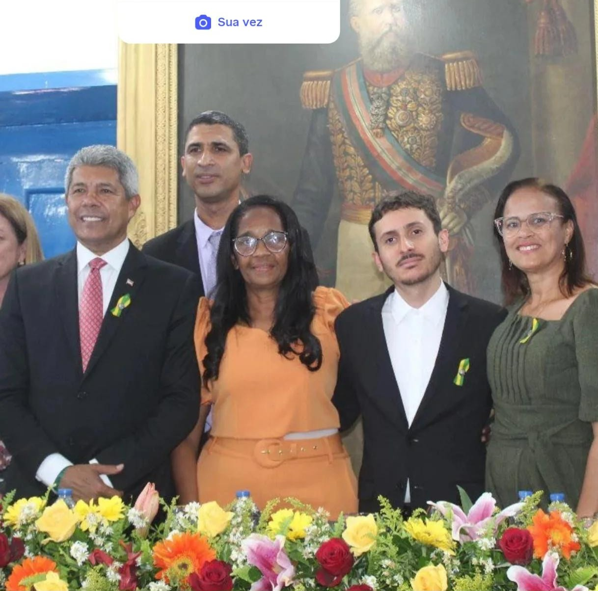
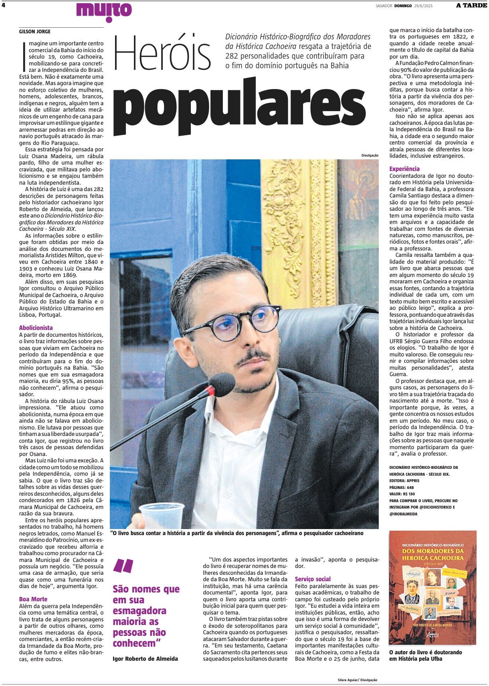

Cachoeira / Salvador · Bahia
Pesquisa, escrita e doutorado
No formulário do Memorial, Igor informa que atualmente atua como pesquisador e escritor e, desde 2023, cursa Doutorado em História na UFBA, em Salvador.
Trajetória de egresso
Pesquisador, escritor e doutorando, entre Cachoeira e Salvador.
2014–2018
Igor Roberto de Almeida Moreira se identifica como egresso do Curso de História da UFRB, com ingresso em 2014 e conclusão em 2018. Atualmente divide sua trajetória entre Cachoeira e Salvador e se apresenta como pesquisador, escritor e doutorando.
Entre 2019 e 2021, realizou o Mestrado em História Regional e Local na UNEB, Campus V, em Santo Antônio de Jesus. Desde 2023, cursa Doutorado em História na UFBA, em Salvador.
Você hoje

No formulário do Memorial, Igor informa que atualmente atua como pesquisador e escritor e, desde 2023, cursa Doutorado em História na UFBA, em Salvador.
Depois da UFRB
Formação realizada na UNEB, Campus V.
Formação em andamento na Universidade Federal da Bahia.

2023 · CachoeiraEm 2023, Igor atuou como orador oficial de uma sessão solene em comemoração ao bicentenário da Independência do Brasil na Bahia.

2025 · CachoeiraEm 2025, publicou o livro Dicionário Histórico-Biográfico dos Moradores da Heroica Cachoeira, Século XIX.
Em 2026, publicou a primeira edição de De Arraial a Vila: a formação de Cachoeira na Bahia Colonial. No formulário, destaca também o trabalho de recuperação da trajetória de Luiz Osana Madeira.